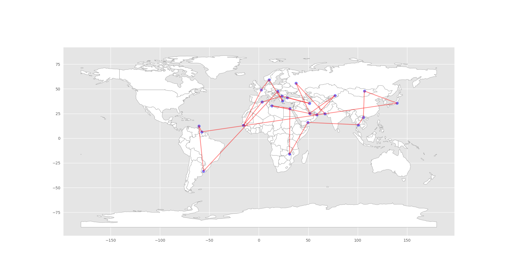
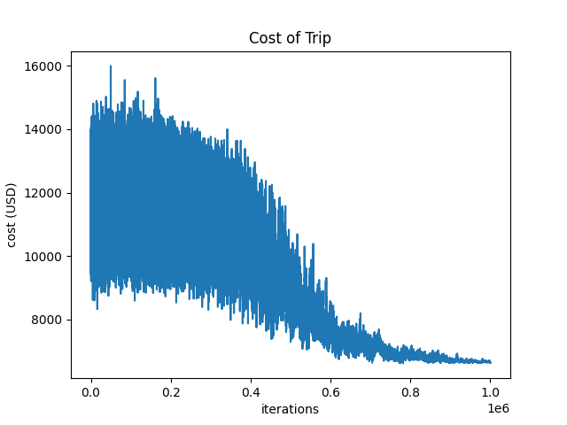
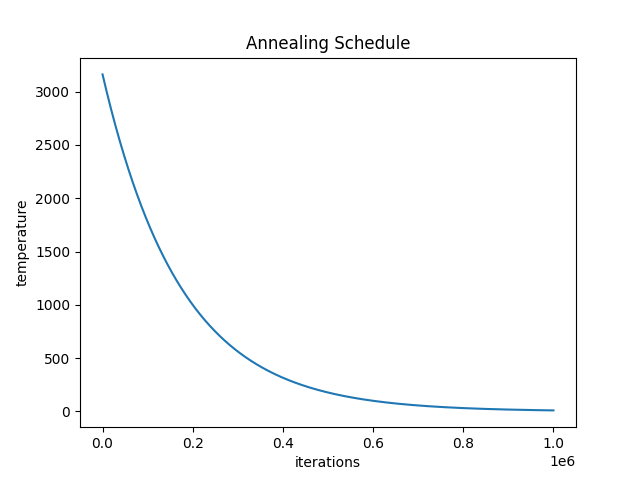

Annealing of Nations: Where Kids’ Music Meets Optimization Algorithms
One challenge with having little ones is finding kids’ music that doesn’t slowly drive you crazy. My family enjoys the kids’ albums by the nerd rock group They Might Be Giants (TMBG). Their song “Alphabet of Nations” is quite catchy.
At the same time my family was listening to the TMBG albums, I was also studying optimization and search heuristics. I was fascinated by the traveling salesman problem (TSP) and the various algorithms used to solve it.
And so, in a moment of what I can only describe as sleep-deprived inspiration (parents, you know what I’m talking about), I decided to combine these two seemingly unrelated interests. The result? A project that uses the Simulated Annealing algorithm to solve a Traveling Salesperson Problem based on the nations mentioned in TMBG’s “Alphabet of Nations”. Because why not?
The Challenge
The task was straightforward, if a bit eccentric: find the most efficient route to visit all the countries listed in the song. Here’s our illustrious itinerary:
Algeria, Bulgaria, Cambodia, Dominica, Egypt, France, Gambia, Hungary, Iran, Japan, Kazakhstan, Libya, Mongolia, Norway, Oman, Pakistan, Qatar, Russia, Suriname, Turkey, Uruguay, Vietnam, Xylokeriza (Greece), Yemen, Zimbabwe
You might notice that “Xylokeriza, Greece” seems out of place. That’s because the song actually mentions “West Xylophone”, which, last I checked, isn’t a recognized nation. Since “xylophone” is of Greek origins, I substituted it with a real place in Greece that has “xylo” in the name. Creative problem-solving at its finest.
For those curious about the musical inspiration behind this madness, you can find the video here. Just don’t blame me if it gets stuck in your head.
The Results
After letting the algorithm run, here’s what it came up with:

And because no good project is complete without a graph, here’s how our trip cost evolved over time:

As you can see, we started with costs ranging from $9,000 to $15,000 per person. Thankfully, our trusty algorithm managed to bring it down to a more reasonable $6,000. Still not cheap, but hey, that’s the price of combining data science and musical geography.
The Method to the Madness
For those interested in the technical details (and let’s face it, if you’ve read this far, you probably are), here’s how I put this together:
Flight Data
I repurposed some code from a previous project, the “Flight Deal Finder”, because why solve one problem when you can solve two? This code does the following:
- Choosing the busiest airport in each country.
- Creating a Google Sheet with these airports.
- Using the Tiquila API via Kiwi.com to get flight prices, with some arbitrary rules to keep things interesting:
- Cheapest one-way flights with up to 3 layovers
- Flight dates within 6 months of the query date
Optimization
This is where the Simulated Annealing algorithm comes in. If you’re not familiar with it, imagine the process of forging a sword. Imagine heating metal to a high temperature so it becomes malleable, then slowly cooling it while hammering to remove imperfections. In simulated annealing, the “temperature” controls how freely the algorithm explores possible solutions, starting with random, wide exploration (high temperature) and gradually focusing on improving solutions (lower temperature). Just like how a blacksmith avoids cooling the metal too quickly to prevent cracks, the algorithm reduces randomness gradually to find an optimal solution without getting stuck in suboptimal ones. But here, instead of a sword, we have a travel itinerary. For the curious (or the insomniacs), there’s always the Wikipedia page.
The algorithm will randomly swap a pair of airports to change the route and compare the results to the previous route. If the new paths do not have available flights, the new route is rejected. If the new route is cheaper, it is kept. If the new route is more expensive, it is rejected with some probability of keeping it, based on the relative difference in the two routes’ performance, as well as the temperature parameter.

What’s Next?
Having completed this project, I find myself at a crossroads. Do I:
- Expand on this, perhaps finding the optimal route for other music-inspired challenges? (Beach Boy’s Kokomo, anyone?)
- Use my newfound skills for something practical, like a trip optimizer app?
- Finally get some sleep?
Only time will tell. In the meantime, if you have any suggestions for improvements or just want to commiserate about the intersection of parenting, music, and data science, feel free to reach out. I’ll be here, probably humming “Alphabet of Nations” and dreaming of efficient flight paths.